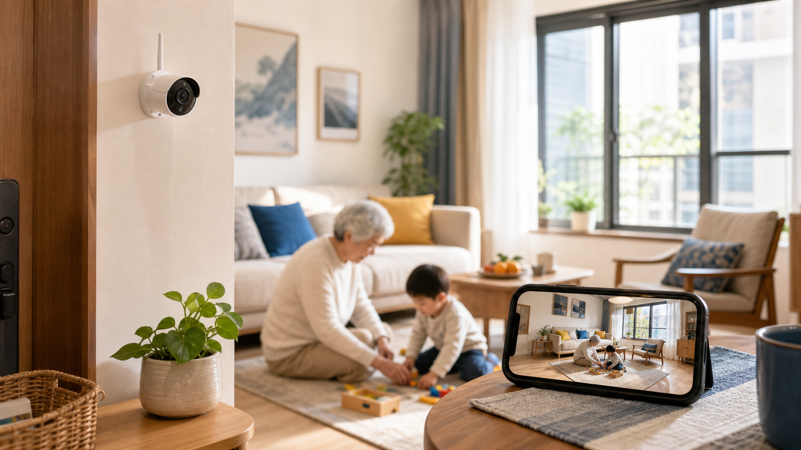
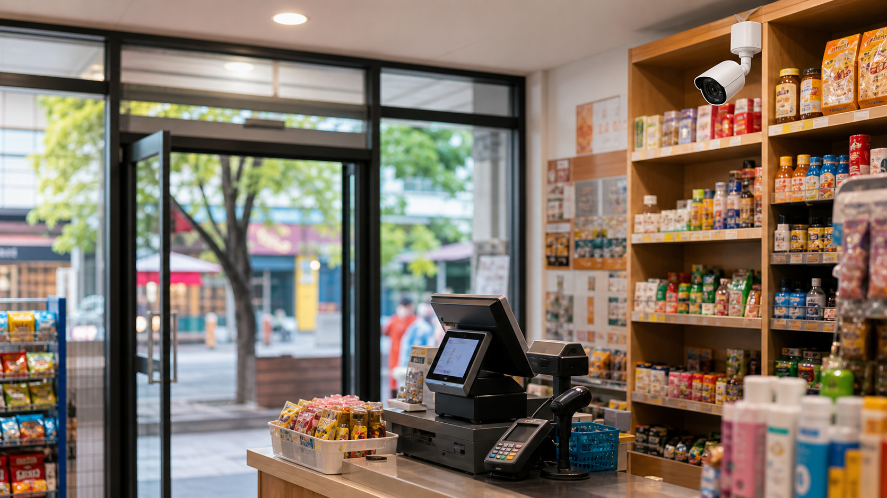
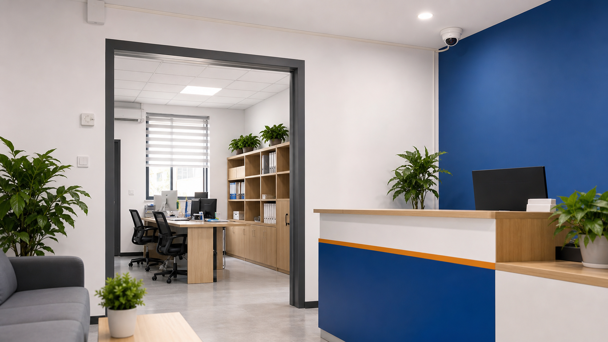

小家电服务
常见小家电销售、使用咨询、安装指导、基础调试。
25年老店 · 临淄本地服务
25年深耕临淄，专注小家电服务与监控安装调试，提供家庭、商铺、仓库、办公室等场景的上门安装、设备调试和后续维护。
25年深耕临淄，服务实在更安心

找小文
家电监控都放心
Service
从家用小电器到监控安装调试，常见问题尽量一次说明白、一次处理好。
常见小家电销售、使用咨询、安装指导、基础调试。
家庭、商铺、仓库、办公室、院落等场景点位规划与安装。
手机远程查看、录像回放、网络连接、画面角度和存储设置。
线路检查、故障排查、设备维护、后续使用指导。
Monitor
从家庭看护到商铺管理，从小型门店到工程项目，小文家电根据不同场景提供合适的监控安装与调试服务。
适合场景：住宅、老人看护、儿童看护、门口、院子、车库、楼道、自建房。
家庭类监控主要解决家中看护与安全需求，适合老人小孩看护、门口院落防护、车库楼道查看等场景。可根据家庭环境规划摄像头位置，支持手机远程查看、录像回放、夜视监控和基础使用教学，让家里看得见、用得顺、后续有问题能找到人。
适合场景：便利店、餐饮店、超市、服装店、办公室、收银台、仓库、出入口、前台区域。
商铺公司类监控适合门店经营、办公室管理、仓库看护和出入口安全等场景。可根据收银台、门口、货架、仓库、公共区域等重点位置设计点位，支持多画面查看、录像保存、手机远程管理和后续维护，帮助本地商户更方便地看店、管店、护店。
适合场景：厂区、工地、停车场、仓储园区、单位院落、小型工程项目、物业公共区域。
工程项目类监控主要面向厂区、工地、停车场、仓储园区、单位院落等较大场景，服务内容包括现场勘察、点位规划、线路布置、设备配置、安装调试、手机或电脑端查看设置及后续维护。根据现场面积、监控范围、网络条件和使用需求，提供更稳妥的安装方案，尽量做到覆盖清晰、线路规整、运行稳定。
Why Us
Scenes
家庭看护、商铺收银、仓库院落、办公室出入口，都可以按现场情况配置。

家庭手机远程查看，常用画面清晰稳定。

商铺根据柜台、门口、货架位置调整角度。
关注夜间画面、覆盖范围和线路安全。

办公室安装整洁，尽量减少对日常办公的影响。
About
小文家电位于淄博市临淄区稷下街道办阳光康城商业房，是一家服务临淄本地多年的家电与监控安装调试老店。门店日常经营常见小家电服务，同时承接家庭、商铺、仓库、办公室、院落等场景的监控安装、设备调试、线路检查和后续维护。
我们更重视把方案讲清楚、把线路走规整、把手机远程查看和录像回放教明白。客户后续使用中遇到网络连接、画面调整、设备维护等问题，也可以继续电话或微信沟通。
Contact
不清楚需要装几个摄像头也没关系，可以先电话沟通，必要时上门看现场后再定方案。
 微信扫码咨询
微信号：13608940548
微信扫码咨询
微信号：13608940548
长按二维码保存，或复制微信号添加。